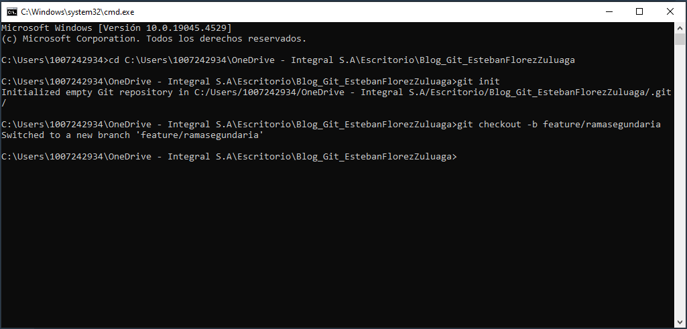

Sobre mí
Hola a todos, soy Esteban Florez Zuluaga, un apasionado desarrollador de software BackEnd con más de 2 años de experiencia en la industria. Me especializo en el desarrollo de aplicaciones robustas y escalables utilizando tecnologías como Asp .NET Core, Python y Angular. Además, tengo un fuerte interés en la seguridad informática y la optimización del rendimiento.
En mi tiempo libre, disfruto explorando nuevas tecnologías, participando en hackathons y contribuyendo a proyectos de código abierto. También soy un ávido lector de libros de ciencia ficción y un entusiasta del ciclismo de montaña.
Este blog es mi espacio personal donde comparto mis pensamientos y conocimientos sobre tecnología, en particular, temas relacionados con hardware y software. Mi objetivo es ayudar a otros desarrolladores a mejorar sus habilidades y mantenerse actualizados con las últimas tendencias en la industria.
Blog
¿Qué es el Hardware?
El hardware se refiere a todos los componentes físicos que conforman un sistema informático. Esto incluye dispositivos como el monitor, teclado, disco duro, y la unidad central de procesamiento (CPU), entre otros. A diferencia del software, el hardware es tangible y esencial para que cualquier sistema funcione correctamente.

El hardware puede clasificarse en varias categorías, incluyendo hardware de entrada, hardware de salida, hardware de almacenamiento y hardware de procesamiento. Cada uno de estos componentes juega un papel crucial en el funcionamiento general del sistema. Sin hardware, el software no podría ejecutarse, ya que el hardware proporciona la infraestructura física necesaria.
Es importante entender que el hardware ha evolucionado a lo largo del tiempo, mejorando en términos de velocidad, eficiencia energética, y capacidad. Estos avances han permitido que las computadoras modernas realicen tareas cada vez más complejas.
Tipos de Hardware
Existen varios tipos de hardware que se pueden clasificar en función de su función dentro del sistema. Los más comunes son:
- Hardware de entrada: Dispositivos como el teclado y el ratón que permiten al usuario interactuar con el sistema.

- Hardware de salida: Dispositivos como la pantalla y la impresora que muestran o producen resultados del procesamiento del sistema.
- Hardware de almacenamiento: Dispositivos como los discos duros y SSDs que almacenan datos y programas.

- Hardware de procesamiento: Componentes como la CPU y la GPU que realizan cálculos y ejecutan programas.
Además, existen otros tipos de hardware especializados, como las tarjetas de red, que permiten la comunicación entre dispositivos, y las fuentes de alimentación, que proporcionan energía a todos los componentes del sistema.
El conocimiento sobre los diferentes tipos de hardware es esencial para cualquier persona que desee entender el funcionamiento interno de un computador o desarrollar habilidades en el ensamblaje y mantenimiento de equipos.
Importancia del Hardware
El hardware es crucial para el funcionamiento de cualquier dispositivo informático. Sin hardware, el software no tendría una plataforma para ejecutarse, lo que significa que no podríamos utilizar computadoras, teléfonos móviles, o cualquier otro dispositivo electrónico. Además, la calidad y capacidad del hardware determinan en gran medida el rendimiento y la eficiencia del sistema en su conjunto.

La evolución del hardware ha permitido avances significativos en la tecnología, desde la creación de computadoras más rápidas y eficientes hasta el desarrollo de dispositivos móviles potentes y compactos. La innovación en hardware continúa impulsando el progreso en diversas áreas, incluyendo la inteligencia artificial, la realidad virtual y la computación en la nube.
El Ábaco: El Primer Computador de la Historia
El ábaco es uno de los dispositivos de cálculo más antiguos conocidos por la humanidad, y aunque hoy en día puede parecer rudimentario en comparación con los computadores modernos, su invención marcó un hito fundamental en la historia de las matemáticas y la computación.
El origen del ábaco se remonta a más de 4,000 años atrás, con los primeros registros provenientes de la antigua Mesopotamia. Este dispositivo ha sido utilizado en diversas culturas a lo largo de la historia, incluyendo las civilizaciones china, egipcia, griega y romana.
Aunque el ábaco no es un computador en el sentido moderno, su influencia en la evolución de la computación es innegable. Sentó las bases para la comprensión de la aritmética, la representación de datos y la creación de algoritmos, todos ellos componentes fundamentales de las ciencias computacionales. En resumen, el ábaco no solo fue una herramienta crucial para el desarrollo de la matemática y el cálculo, sino que también es un precursor conceptual de las computadoras que utilizamos hoy en día.
Tutorial de Git
Inicialización del Repositorio Localmente
Para comenzar a utilizar Git en tu proyecto, primero debes inicializar un repositorio local. Sigue estos pasos:
- Abre tu terminal y navega hasta el directorio de tu proyecto.
Puedes abrir la terminal ingresando con WIN + R y buscar "CMD"
 Puedes acceder a la ruta con cd "Ruta del proyecto"
Puedes acceder a la ruta con cd "Ruta del proyecto"
- Ejecuta el siguiente comando para inicializar el repositorio:
git init
Este comando creará un nuevo subdirectorio llamado .git que contiene todos los archivos necesarios para el repositorio.
Sabemos que nos quedo bien cuando nos genera en las carpetas ocultas la siguiente
Creación de Branches
Las ramas (branches) en Git te permiten desarrollar funcionalidades aisladas unas de otras. La rama principal por defecto es 'master'. Para crear una nueva rama:
git branch nombre-de-la-rama
Para cambiar a la nueva rama:
git checkout nombre-de-la-rama
O puedes hacer ambas cosas en un solo comando:
git checkout -b nombre-de-la-rama

Ejemplo práctico usando merge
Supongamos que has creado una rama llamada 'feature/ramasegundaria' y has realizado algunos cambios. Para fusionar estos cambios con la rama principal:
- Cambia a la rama master:
git checkout master
En mi caso no funciono y me saco el siguiente error
error: pathspec 'master' did not match any file(s) known to git
El error que me aparece se puede deber a dos motivos el primero es que en Git, la rama principal ya no se llama master en muchos casos. A partir de Git versión 2.28, la rama por defecto cambió a main, como parte de un esfuerzo por adoptar un lenguaje más inclusivo.
Para solucionar este problema, puedes hacer lo siguiente:
Verifica el nombre de la rama principal por defecto en tu repositorio ejecutando el siguiente comando:
git branch
El segundo es porque acabo de inicializar el repositorio (git init) y aún no he realizado ningún commit. Para poder cambiar entre ramas, primero necesito tener al menos un commit en la rama principal.
git commit -m "Initial commit"

El mensaje te indica que no se ha añadido ningún archivo para el commit porque tienes archivos sin seguimiento ("untracked files"). Para solucionarlo, sigue estos pasos:
- Añadir los archivos no rastreados (como images/ e index.html) para que Git los incluya en el commit:
git add .
El punto (.) indica que estás añadiendo todos los archivos no rastreados en el directorio actual.
- Hacer el commit nuevamente una vez que hayas agregado los archivos:
git commit -m "Initial commit"

Una vez realizado el Commit procedemos nuevamente a cambiar a la rama master con:
git checkout master
En mi caso particular me saca el error "git checkout main
error: pathspec 'main' did not match any file(s) known to git" al intentar hacer git checkout master se debe a que la rama master no existe en mi repositorio. Esto puede suceder porque, en las versiones más recientes de Git, el nombre predeterminado de la rama principal es main, no master.
Aquí tienes lo que puedes hacer a continuación:
-
Verificar las ramas existentes: Para confirmar qué ramas tienes, ejecuta el siguiente comando:
git branch
- Crear la rama main (si no existe): Si ves que no existe una rama principal (main o master), puedes crearla manualmente desde tu rama actual:
git checkout -b main
- Fusionar la rama feature/ramasegundaria en main: Si quieres fusionar los cambios de tu rama feature/ramasegundaria en main, primero asegúrate de estar en main:
git checkout main
- Finalmente, fusiona los cambios:
- Fusiona la rama 'feature' con 'master':
git merge feature/ramasegundaria

Agregar un Repositorio Remoto
Para conectar tu repositorio local con uno remoto en GitHub:
- Crea un nuevo repositorio en GitHub una vez creada la cuenta y allás iniciado sesión (sin inicializarlo con un README).


- Copia la URL del repositorio.
- En tu terminal, ejecuta:
git remote add origin URL-del-repositorio
Para verificar que se ha agregado correctamente:
git remote -v

Para subir tus cambios al repositorio remoto:
git push -u origin master

Si validamos el repositorio ya se encuentra lleno

¿Como se transmiten los datos a través de internet?

Transmisión de Datos
1. Protocolos de Comunicación:
- HTTP: El Protocolo de Transferencia de Hipertexto (HTTP) se utiliza para la transmisión de datos en la web.
- HTTPS: (HTTP Secure) añade una capa de seguridad mediante la encriptación.
- TCP/IP: El Protocolo de Control de Transmisión (TCP) y el Protocolo de Internet (IP) son fundamentales para la transmisión de datos a través de redes. TCP garantiza la entrega ordenada de paquetes de datos.
2. División en Paquetes:
Los datos se dividen en pequeños paquetes para su envío. Cada paquete incluye información sobre su origen, destino y número de secuencia, lo que permite reensamblar los datos en el destino.
3. Ruteo:
Los paquetes son enviados a través de múltiples routers y switches en la red, encontrando la mejor ruta hacia su destino.
4. Infraestructura Física:
- Cables de Fibra Óptica: La mayor parte de los datos en Internet se transmiten a través de cables de fibra óptica. Estos cables utilizan luz para enviar datos a alta velocidad, lo que permite grandes anchos de banda y largas distancias sin pérdida significativa de señal.
- Cables de Cobre: En distancias más cortas, se utilizan cables de cobre, como los cables Ethernet, que transmiten datos mediante señales eléctricas.
5. Routers y Switches:
- Routers: Dispositivos que dirigen el tráfico de datos entre diferentes redes. Los routers determinan la mejor ruta para que los paquetes de datos lleguen a su destino.
- Switches: Conectan diferentes dispositivos dentro de una misma red, enviando datos a los dispositivos específicos según sea necesario.